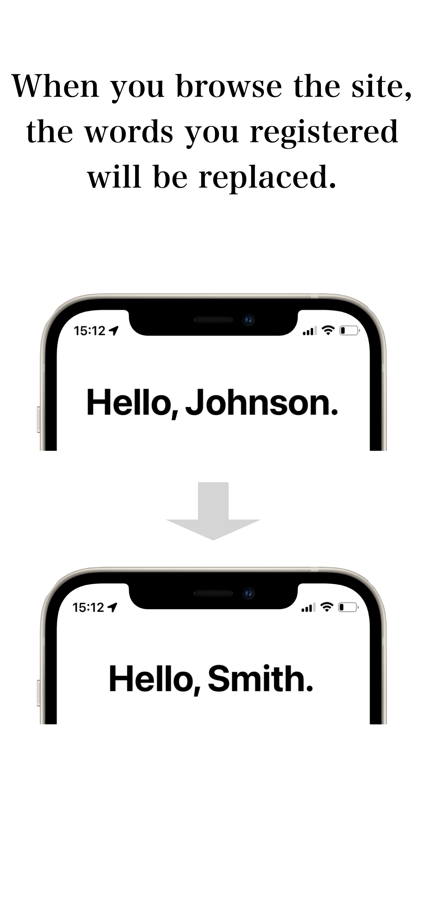
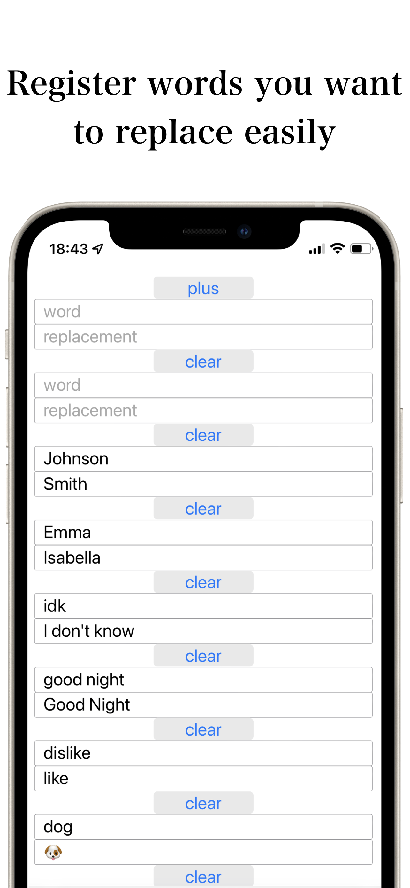

We have created "Word Replacer for Safari", an extension that replaces text on websites.
The reason we created it is that we thought it would be interesting to replace letters on a website, but according to users, many people seem to be using it to replace y/n in fanfiction.
This usage was unexpected, but many people like this extension, and we feel glad that we made it. We wanted more people to use it, so we promoted it in this article. We hope you like it.
We feel that user feedback has allowed us to fully improve the functionality, and We are very grateful.
Other Safari extensions are also available, so please try them if you are so inclined.(Other Safari Extensions)
 